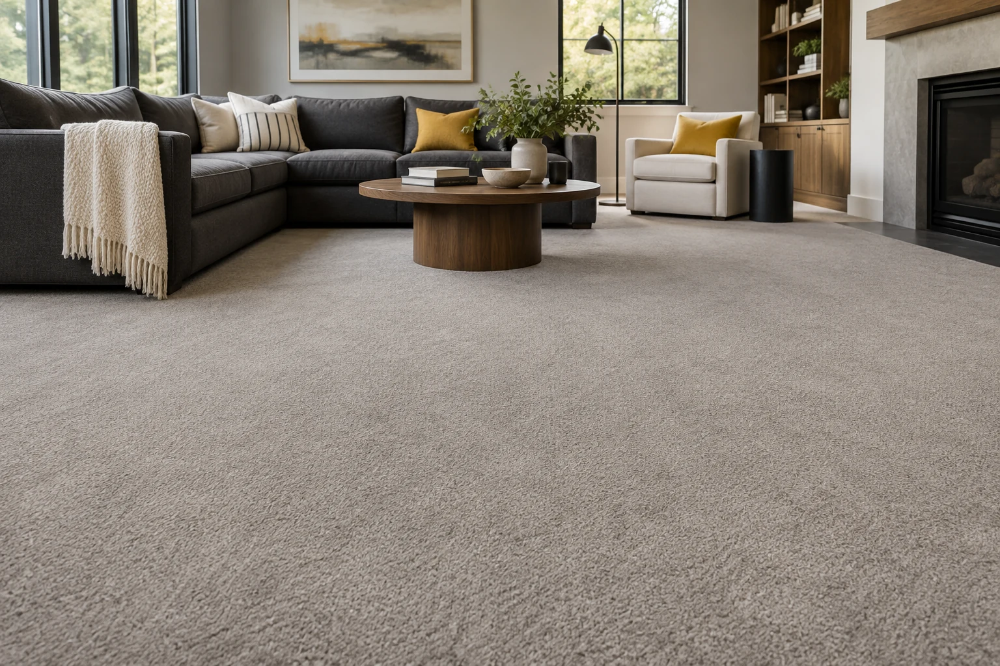

Residential carpet installation in Portland, Oregon.
Carpet remains a comfortable and cost-effective option for bedrooms, family rooms and quieter living spaces. Fiber type, face weight and carpet cushion all influence feel and performance.

Carpet basics
Material cost and installation are separate.
Use the Banana Floors Price Guide to estimate a low-to-high material budget based on square footage and waste allowance. Then send us your project details for a preliminary installation quote. Final scope is verified before scheduling.
Does carpet pad make a difference?
Yes. Carpet cushion affects comfort, sound, feel underfoot and can influence how the carpet performs over time.
Does the carpet material budget include padding?
No. The guide estimates carpet material separately. Padding, removal, stairs, installation, and the cutting layout can change the total. Carpet roll width and seams also affect how much material a room needs.